2. 2D Kinematics#
Aug 12, 2026 | 9262 words | 62 min read
Chapter roadmap
Motion in two dimensions extends the one-dimensional kinematics from the previous chapter by describing motion along two perpendicular directions at the same time. The central strategy is to represent the motion with vectors, separate those vectors into useful components, and then recombine the components when the total motion is needed.
As you read, focus on three questions:
How can a vector be represented, added, subtracted, and resolved into perpendicular components?
Why can horizontal and vertical motions be analyzed independently in projectile motion?
How does the velocity measured for the same object depend on the observer’s reference frame?
These ideas provide the tools needed to analyze curved trajectories, projectile motion, and relative velocity throughout the rest of the course.
Most motions in nature follow curved paths rather than straight lines. Motion along a curved path on a flat surface or a plane is described by two-dimensional (2D) kinematics. Motion not confined to a plane is described by 3D kinematics. Both types (2D and 3D) of kinematics are simple extensions of the 1D kinematics developed previously.
2.1. Kinematics in 2D#
2.1.1. 2D Motion: Walking in a City#
How can you give directions in a city with uniform square blocks? The straight-line path (as the crow flies) is blocked to you as a pedestrian, where you are forced to take a 2D path.
Fig. 2.1 Distance traveled in an idealized city. A pedestrian moving through a grid of city streets cannot travel directly toward the destination. In this example, the pedestrian travels 9 blocks east and then 5 blocks north, for a total distance traveled of 14 blocks. The straight-line separation between the starting and ending positions is shorter than the path actually traveled.
Source: OpenStax, College Physics 2e, Section 3.1.#

Fig. 2.2 The limitation of “as the crow flies.” The magnitude of the displacement depends only on the starting and ending positions, corresponding to the straight-line separation between them. The distance traveled depends on the actual path. In a real city, streets, buildings, and other obstacles can prevent a traveler from following the straight-line displacement vector, so the distance traveled may be substantially greater.
Source: MakeAGif scene from Hot Fuzz.#
To get from the start point to the destination, you walk 14 blocks in all: 9 east followed by 5 north. What is the straight-line distance?
The shortest distance between two points is a straight line. The two legs of the trip and the straight-line path form a right triangle. The distance traveled along the legs is: \(9\ {\rm blocks} + 5\ {\rm blocks} = 14\ {\rm blocks}\). As a result, the Pythagorean theorem (\(c^2= a^2 + b^2\)) is used to find the straight-line distance.
The hypotenuse of the triangle \(c\) is the straight-line path, where in this case we have
Notice that this is considerably shorter than the \(14\ {\rm blocks}\) walked along the legs of the triangle. This is a good example of a general characteristic of vectors because the path has a magnitude (i.e., distance) and a direction (i.e., north of east).
We use arrows to represent vectors. The length of the arrow is proportional to the vector’s magnitude, while the arrow points in the same direction as the vector. For 2D motion, the path of an object is represent by three vectors
one vector shows the horizontal component,
one vector shows the vertical component, and
one vector shows the straight-line path (i.e., hypotenuse) of the motion.
The horizontal and vertical components combine to give the straight-line path. For example, we construct the paths from Figure 2.1 using arrows, where
the first arrow represents \(9\ {\rm blocks}\) east,
the second represents \(5\ {\rm blocks}\) north, and
the final arrow represents the total displacement vector.
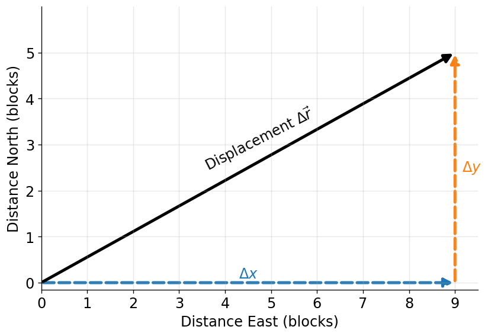
Fig. 2.3 Vector representation of the pedestrian’s displacement. The dashed component vectors show the 9-block displacement east and 5-block displacement north. The solid black vector is the resultant displacement from the starting point to the destination.#
Show code cell content
import matplotlib.pyplot as plt
from matplotlib.patches import FancyArrowPatch
from myst_nb import glue
fs = 'x-large'
lw = 3
dx = 9
dy = 5
fig, ax = plt.subplots(figsize=(7,5), dpi=120)
# x-component
x_comp = FancyArrowPatch((0,0), (dx,0), arrowstyle='-|>', mutation_scale=18, linewidth=lw, linestyle='--', color='tab:blue')
ax.add_patch(x_comp)
# y-component
y_comp = FancyArrowPatch((dx,0), (dx,dy), arrowstyle='-|>', mutation_scale=18, linewidth=lw, linestyle='--', color='tab:orange')
ax.add_patch(y_comp)
# Resultant displacement vector
resultant = FancyArrowPatch((0,0), (dx,dy), arrowstyle='-|>', mutation_scale=18, linewidth=lw, linestyle='-', color='k')
ax.add_patch(resultant)
# Vector labels
ax.text(dx/2, 0.35, r'$\Delta x$', color='tab:blue', fontsize=fs, ha='center', va='top')
ax.text(dx+0.15, dy/2, r'$\Delta y$', color='tab:orange', fontsize=fs, ha='left', va='center')
ax.text(dx/2+0.25, dy/2-0.15, r'Displacement $\Delta \vec{r}$', color='k', fontsize=fs, rotation=27,ha='center', va='bottom')
# Axes
ax.set_xlim(0,9.5)
ax.set_ylim(-0.15,6)
ax.set_xticks(range(0,10))
ax.set_yticks(range(0,6))
ax.set_xlabel('Distance East (blocks)', fontsize=fs)
ax.set_ylabel('Distance North (blocks)', fontsize=fs)
ax.tick_params(labelsize=fs)
ax.set_aspect('equal')
ax.spines[['top','right']].set_visible(False)
ax.grid(True,alpha=0.3)
plt.tight_layout()
glue('city_vector_diagram', fig, display=False)
plt.close(fig)
In this example, we add the vectors because they are perpendicular to each other and form a right triangle. We can use the Pythagorean theorem to calculate the magnitude of the total displacement. However, we cannot use the Pythagorean theorem when the vectors are not perpendicular.
2.1.2. The Independence of Perpendicular Motions#
The person taking the path in Figure 2.1 walks east and then north. How far they walk east is only affected by their motion eastward and unaffected by how far they walk northward.
Independence of Motion
The horizontal and vertical components of 2D motion are independent of each other. Any motion in the horizontal direction does not affect motion in the vertical direction, and vice versa.
Let’s compare the motion of two baseballs from the same height, where
one is dropped from rest, and
another is thrown horizontally.

Fig. 2.4 The red ball falls straight down, while the blue ball moves horizontally at constant speed while accelerating vertically. At equal time intervals, both objects have the same vertical position, as indicated by the dashed horizontal lines. The velocity and acceleration vectors illustrate that horizontal motion does not affect vertical motion. The animation was generated using Python, with AI-assisted code development (ChatGPT).#
Figure 2.4 shows that the vertical positions of the two balls are the same. This similarity implies that the vertical motion is independent of whether (or not) the ball is moving horizontally.
Careful examination of the ball thrown horizontally shows that it travels the same constant distance between flashes. Only one force is acting on the ball (i.e., gravity) and no horizontal forces act to change the ball’s horizontal motion (i.e., no air resistance). The horizontal velocity is constant and not affected by the vertical motion. Note: under real-world conditions, air resistance will affect the speed of the balls in both directions.
This examples demonstrates how we can analyze projectile motion and resolve (break) it into motions along perpendicular directions. Resolving 2D motion into perpendicular components is possible because the components are independent.
2.1.3. Check Your Understanding: Independent Motions#
Check Your Understanding: Independent Motions
The Problem
Two identical balls start at the same height at the same instant. One is dropped from rest while the other is launched horizontally. If air resistance is negligible, which ball reaches the ground first?
Show worked solution
The Conclusion
The balls reach the ground at the same time. Their horizontal motions are different, but their vertical motions are identical: both begin with zero vertical velocity and accelerate downward at \(g\). Horizontal velocity does not change how long either ball takes to fall through the same vertical distance.
Interactive Simulation: Ladybug Motion in 2D
Use this PhET simulation to explore how the position, velocity, and acceleration vectors of the ladybug change depending on your choices.
2.2. Vector Addition and Subtraction: Graphical Methods#
2.2.1. Vectors in 2D#
A vector quantity has magnitude and direction. For example,
displacement,
velocity,
acceleration, and
force
are all vectors. In 1D motion, the direction of a vector is given by a sign \((+/-)\) relative to a zero point. In 2D, we specify the direction of a vector relative to some reference direction (e.g., east) using an arrow whose length is proportional to the vector’s magnitude.
Figure 2.3 shows a graphical representation of the displacement vector \(\Delta \vec{r}\).
Vectors in this Text
We represent a vector quantity using an arrow on top of the variable, where the magnitude is just the variable in italics. In Markdown, we use the math mode $ $ (inline) or $$ $$ (centered line) to display mathematical expressions.
For example, suppose we have a vector \(\vec{x}\). This is written as $\vec{x}$ where the \vec{} command tells the renderer to add the arrow on top. Without this command, it renders like this: \(x\) which is in italics and would denote only the magnitude \(x\) of the vector \(\vec{x}\).
2.2.2. Vector Addition: Head-to-Tail Method#
The head-to-tail method is a graphical way to add (combine) vectors. The tail of the vector is the starting point of the vector, where the head (or tip) of a vector is the final pointed end of the arrow.
Fig. 2.5 The head-to-tail method of graphically adding vectors is illustrated for the two displacements of the person walking in a city. (a) Draw a vector representing the displacement to the east. (b) Draw a vector representing the displacement to the north. The tail of this vector should originate from the head of the first, east-pointing vector. (c) Draw a line from the tail of the east-pointing vector to the head of the north-pointing vector to form the sum or resultant vector \(\vec{D}\). The length of the arrow \(D\) is proportional to the vector’s magnitude and is measured to be 10.3 units . Its direction, described as the angle with respect to the east (or horizontal axis) \(\theta\) is measured with a protractor to be \(29.1^\circ\). Source: OpenStax College Physics 2e, Figure 3.10.#
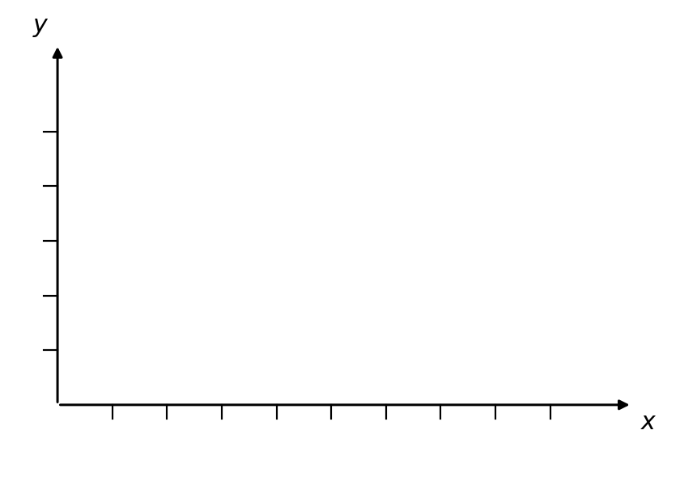
Fig. 2.6 The head-to-tail method for graphically adding vectors starts with the first arrow relative to the origin, where each subsequent arrow is drawn as though the tip of the previous arrow is the “new” origin. At the end, the resultant vector is drawn from the origin to the final arrow tip.#
Head-to-Tail Step-by-Step
Here are the step-by-step instructions for the head-to-tail method using Figs. 2.5 and 2.6 as visual guides:
Step 1: Draw an arrow to represent the first vector (9 blocks to the east) using a ruler and protractor.
Step 2: Draw an arrow to represent the second vector (5 blocks to the north). Place the tail of the second vector at the head of the first vector.
Step 3: If there are more than two vectors, continue this process for each vector. In our example, we only have two vectors, so we have finished placing arrows tip to tail.
Step 4: Draw an arrow from the tail of the first vector to the head of the last vector. This is the resultant (or the sum) of the other vectors.
Step 5: To get the magnitude of the resultant, measure its length with a ruler, or use the Pythagorean theorem.
The graphical addition of vectors is limited in accuracy only by the precision of the drawings and the measuring tools. It is valid for any number of vectors.
Vector addition is commutative, which means that the order in which you add the vectors does not matter. Normal addition is commutative, or
2.2.3. Example Problem: Adding Vectors Graphically#
Example Problem: Adding Vectors Graphically
The Problem
A walker makes three successive displacements on a flat field: \(25\ {\rm m}\) at \(49^\circ\) north of east, \(23\ {\rm m}\) at \(15^\circ\) north of east, and \(32\ {\rm m}\) at \(68^\circ\) south of east. Use the head-to-tail graphical method to determine the magnitude and direction of the total displacement.
Fig. 2.7 The three displacement vectors that define the walk. Source: OpenStax College Physics 2e, Figure 3.14.#
Show worked solution
The Model
The three legs of the walk form one continuous displacement path, so the total displacement is represented by the vector sum \(\vec{R}=\vec{A}+\vec{B}+\vec{C}\). Because each direction is stated relative to east and north, east serves as the horizontal reference direction and north as the vertical reference direction. A graphical solution must preserve both the magnitude and direction of every displacement by using a common scale. The quantity to determine is the resultant vector from the starting point to the final point.
The Math
The graphical construction begins with one scale applied consistently to all three displacement vectors. Using \(1.0\ {\rm cm}=5.0\ {\rm m}\) gives drawing lengths of \(5.0\ {\rm cm}\), \(4.6\ {\rm cm}\), and \(6.4\ {\rm cm}\) for \(\vec{A}\), \(\vec{B}\), and \(\vec{C}\), respectively. The vectors are arranged head-to-tail while each retains its stated direction, and the resultant \(\vec{R}\) is drawn from the tail of the first vector to the head of the last vector.
A ruler measurement of the completed construction gives a resultant length of about \(10.2\ {\rm cm}\). Converting that measured length with the same scale gives
A protractor measurement places the resultant approximately \(5.47^\circ\) south of east.
The Conclusion
The total displacement is approximately \(50.8\ {\rm m}\) at \(5.47^\circ\) south of east. The answer is reasonable because the first two legs carry the walker mostly eastward and northward, while the final southeast leg removes much of the northward displacement but continues to add eastward displacement.
Adapted from OpenStax College Physics 2e, Example 3.1.
2.2.4. Vector Subtraction#
Vector subtraction is a straightforward extension of vector addition, when framed properly. To reverse the direction of any vector, you need only to take its negative. Therefore we can define the addition and subtraction of vectors in the same way, or
The negative of a vector \(\vec{B}\) has the same magnitude but points the opposite direction. Essentially, we just flip the vector so it points in the opposite direction (see Figure 2.8)
Fig. 2.8 The negative of a vector is just another vector of the same magnitude but pointing in the opposite direction. So \(-\vec{B}\) is the negative of \(\vec{B}\). Source: OpenStax College Physics 2e, Figure 3.19.#
The subtraction of \(\vec{B}\) from \(\vec{A}\) is then simply defined as the addition of \(-\vec{B}\) to \(\vec{A}\), or
This is analogous to our normal subtraction rules, where \(5-2 = 5 + (-2)\).
2.2.5. Example Problem: Subtracting Vectors Graphically#
Example Problem: Subtracting Vectors Graphically
The Problem
A sailor is instructed to travel \(27.5\ {\rm m}\) at \(66^\circ\) north of east and then \(30\ {\rm m}\) at \(112^\circ\) counterclockwise from east. She mistakenly travels the second leg in the opposite direction. Use a graphical construction to determine where she ends up relative to her starting point, and compare that location with the intended dock.
Fig. 2.9 The two intended displacement vectors. Source: OpenStax College Physics 2e, Figure 3.20.#
Show worked solution
The Model
The intended route and the mistaken route differ only in the direction of the second displacement. We represent the first leg by \(\vec{A}\) and the intended second leg by \(\vec{B}\), so the dock lies at the endpoint of \(\vec{A}+\vec{B}\). Traveling the second leg in the opposite direction replaces \(\vec{B}\) with \(-\vec{B}\), which has the same magnitude as \(\vec{B}\) but points \(68^\circ\) south of east. The mistaken destination is therefore found from \(\vec{A}+(-\vec{B})=\vec{A}-\vec{B}\).
The Math
Both destinations can be compared with the same graphical scale, so the difference between the two constructions comes only from reversing the second vector. For the mistaken route, \(\vec{A}\) is drawn first and \(-\vec{B}\) is placed head-to-tail with it. The resultant from the original starting point to the mistaken endpoint measures approximately
and points about \(7.5^\circ\) south of east.
The intended dock is found by repeating the construction with \(\vec{B}\) rather than \(-\vec{B}\). That head-to-tail sum gives a resultant magnitude of approximately
The measured direction is \(90.1^\circ\) counterclockwise from east, which is nearly due north.
The Conclusion
The mistaken route leaves the sailor about \(23.0\ {\rm m}\) from the starting point at \(7.5^\circ\) south of east, while the dock is about \(52.9\ {\rm m}\) from the starting point and nearly due north. Reversing the second vector therefore changes the destination dramatically even though the magnitude of that leg remains unchanged.
Adapted from OpenStax College Physics 2e, Example 3.2.
2.2.6. Multiplication of Vectors and Scalars#
Let’s go back to our initial example (Figure 2.1) and suppose that we walk \(3\times\) farther east before turning north. Then we would walk \(3 \times 9\ {\rm blocks} = 27\ {\rm blocks}\). This is an example of multiplying a vector by a positive scalar, where we have scaled up the vector by a factor of three. The magnitude changes, but the direction stays the same.
If the scalar is negative, then the magnitude changes and the vector reverses direction. For example, if you multiply by \(-2\), the magnitude doubles but the direction changes (it reverses). When a vector \(\vec{A}\) is multiplied by a scalar \(c\), or \(\vec{B} = c\vec{A}\),
the magnitude of the vector \(\vec{B}\) becomes the absolute value of \(cA\) (or \(B = |cA|\)),
if \(c\) is positive, the direction of the vector \(\vec{B}\) does not change,
if \(c\) is negative, the direction is reversed.
Division is the inverse of multiplication. For example dividing by \(2\) is the same as multiplying by the inverse of \(2\) (or \(1/2\)). The rules for division by a scalar are the same as for multiplication, where you multiply by the inverse of the scalar \(c\).
2.2.7. Check Your Understanding: Opposite Vectors#
Check Your Understanding: Opposite Vectors
The Problem
Two nonzero vectors add to give a resultant of zero. What must be true about their magnitudes and directions?
Show worked solution
The Conclusion
The two vectors must have equal magnitudes and opposite directions. In a head-to-tail construction, the second vector then returns exactly to the starting point, so the resultant has zero magnitude. This is the graphical meaning of adding a vector to its negative.
2.3. Vector Addition and Subtraction: Analytical Methods#
Analytical methods of vector addition and subtraction employ geometry and trigonometry rather than the ruler and protractor of graphical methods. Part of the graphical technique is retained, but analytical methods are more concise (and programmable). The graphical technique is easier to visualize, but the analytical methods are limited only by the accuracy and precision with which physical quantities are known.
We’ve been adding the vectors to determine the resultant vector. In many cases, we need to do the opposite. We resolve (or decompose) a resultant vector into its components, or the vectors that can combine to produce the resultant. In most cases, this involves determining the perpendicular components of a single vector. These components are typically aligned with your chosen coordinate system: \(x\)- and \(y\)-components, north-south components, or east-west components.
2.3.1. Resolving a Vector into Perpendicular Components#
Analytical techniques for vectors involve right triangles, where we can use their properties to help us solve problems. For example, a vector \(\vec{A}\) can be resolved into two perpendicular vectors, \(\vec{A}_x\) and \(\vec{A}_y\). These component vectors are described by how they align with the respective \(x\)- and \(y\)-axes. The three vectors for a right triangle (see Figure 2.10):
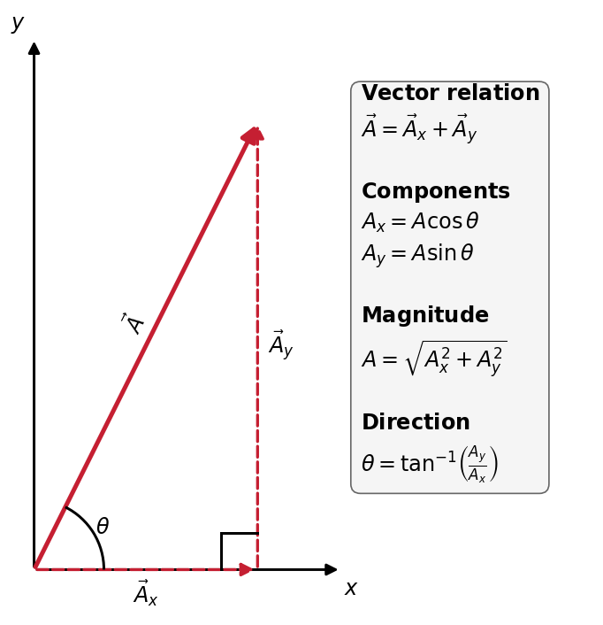
Fig. 2.10 Resolving a vector into components. A vector \(\vec{A}\) can be separated into perpendicular horizontal and vertical components, \(\vec{A}_x\) and \(\vec{A}_y\). The component magnitudes are determined from the vector magnitude \(A\) and direction \(\theta\) using \(A_x=A\cos\theta\) and \(A_y=A\sin\theta\). Conversely, the magnitude and direction of the original vector can be reconstructed from its components using the Pythagorean theorem and the inverse tangent. Adapted from OpenStax, College Physics 2e, Section 3.3.#
Show code cell content
import numpy as np
import matplotlib.pyplot as plt
from matplotlib.patches import FancyArrowPatch, Arc
from myst_nb import glue
fs = 'x-large'
lw = 3
dx = 4
dy = 8
theta = np.arctan2(dy, dx)
theta_deg = np.degrees(theta)
vector_color = '#c51f32'
axis_color = 'k'
fig, ax = plt.subplots(figsize=(8,6), dpi=120)
# ------------------------------------------------------------
# Coordinate axes
# ------------------------------------------------------------
x_axis = FancyArrowPatch((0,0), (5.5,0), arrowstyle='-|>', mutation_scale=16, linewidth=1.8, color=axis_color)
y_axis = FancyArrowPatch((0,0), (0,9.5), arrowstyle='-|>', mutation_scale=16, linewidth=1.8, color=axis_color)
ax.add_patch(x_axis)
ax.add_patch(y_axis)
ax.text(5.55, -0.15, r'$x$', fontsize=fs, ha='left', va='top')
ax.text(-0.15, 9.55, r'$y$', fontsize=fs, ha='right', va='bottom')
# ------------------------------------------------------------
# Vector components
# ------------------------------------------------------------
x_comp = FancyArrowPatch((0,0), (dx,0), arrowstyle='-|>', mutation_scale=18, linewidth=2, linestyle='--', color=vector_color)
y_comp = FancyArrowPatch((dx,0), (dx,dy), arrowstyle='-|>', mutation_scale=18, linewidth=2, linestyle='--', color=vector_color)
ax.add_patch(x_comp)
ax.add_patch(y_comp)
# ------------------------------------------------------------
# Resultant vector
# ------------------------------------------------------------
resultant = FancyArrowPatch((0,0), (dx,dy), arrowstyle='-|>', mutation_scale=22, linewidth=lw, color=vector_color)
ax.add_patch(resultant)
# ------------------------------------------------------------
# Angle marker
# ------------------------------------------------------------
arc_radius = 1.25
theta_arc = Arc((0,0), arc_radius*2, arc_radius*2, angle=0, theta1=0, theta2=theta_deg, linewidth=1.8, color='k')
ax.add_patch(theta_arc)
theta_x = 1.45*np.cos(theta/2)
theta_y = 1.45*np.sin(theta/2)
ax.text(theta_x, theta_y, r'$\theta$', fontsize=fs, ha='center', va='center')
# ------------------------------------------------------------
# Right-angle marker
# ------------------------------------------------------------
right_angle_size = 0.65
ax.plot([dx-right_angle_size, dx-right_angle_size], [0,right_angle_size], color='k', lw=1.8)
ax.plot([dx-right_angle_size, dx], [right_angle_size,right_angle_size], color='k', lw=1.8)
# ------------------------------------------------------------
# Vector labels
# ------------------------------------------------------------
ax.text(dx/2, -0.15, r'$\vec{A}_x$', fontsize=fs, ha='center', va='top')
ax.text(dx+0.18, dy/2, r'$\vec{A}_y$', fontsize=fs, ha='left', va='center')
ax.text(dx/2-0.2, dy/2+0.15, r'$\vec{A}$', fontsize=fs, rotation=theta_deg, ha='center', va='bottom')
# ------------------------------------------------------------
# Floating boxed annotation
# ------------------------------------------------------------
eq_text = (
r'$\mathbf{Vector\ relation}$' + '\n'
r'$\vec{A}=\vec{A}_x+\vec{A}_y$' + '\n\n'
r'$\mathbf{Components}$' + '\n'
r'$A_x=A\cos\theta$' + '\n'
r'$A_y=A\sin\theta$' + '\n\n'
r'$\mathbf{Magnitude}$' + '\n'
r'$A=\sqrt{A_x^2+A_y^2}$' + '\n\n'
r'$\mathbf{Direction}$' + '\n'
r'$\theta=\tan^{-1}\!\left(\frac{A_y}{A_x}\right)$'
)
ax.text(0.60, 0.88, eq_text, fontsize=fs, ha='left', va='top', transform=ax.transAxes, linespacing=1.35,
bbox=dict(boxstyle='round,pad=0.45', facecolor='whitesmoke', edgecolor='0.4'))
# ------------------------------------------------------------
# Figure formatting
# ------------------------------------------------------------
ax.set_xlim(-0.4, 10.0)
ax.set_ylim(-0.8, 10.0)
ax.set_xticks([])
ax.set_yticks([])
ax.set_aspect('equal')
for spine in ax.spines.values():
spine.set_visible(False)
plt.tight_layout()
glue('vector_components_diagram', fig, display=False)
plt.close(fig)
Note
The relationship between vector components and the resultant vector holds only for vector quantities. It does not apply for the magnitudes alone. For example, if
then it is true that \(\vec{A} = \vec{A}_x + \vec{A}_y\). However, it is not true that the sum of the magnitudes is also equal, or
It follows that \(A_x + A_y \neq A\), in general.
Trigonometry refresher: identify the triangle first
When resolving a vector into components, use SOH-CAH-TOA to decide which trigonometric function applies. Identify the opposite, adjacent, and hypotenuse sides relative to the angle that is actually given.
Be careful with the common shortcut that the horizontal component uses cosine and the vertical component uses sine. That is only true when \(\theta\) is measured from the horizontal axis. If the triangle is rotated or the angle is measured from the vertical axis, the adjacent and opposite components switch roles.
The vector magnitude is always the hypotenuse. From there, use the geometry of the triangle to decide which component is adjacent to \(\theta\) and which is opposite.

Fig. 2.11 SOH-CAH-TOA for a right triangle. The names opposite and adjacent are defined relative to the angle \(\theta\), not relative to the horizontal and vertical directions. Use these relationships to determine which trigonometric function gives the desired vector component.#
If the magnitude \(A\) and direction of \(\vec{A}\) is known, then magnitudes of \(\vec{A}_x\) and \(\vec{A}_y\) are given as
Figure 2.1 showed a pedestrian’s path through a city. Let’s consider the path that a drone could take starting from the same initial position. The drone flies a total distance of \(10.3\ {\rm blocks}\) with a heading of \(29.1^\circ\) north of east. From this description we construct the components of a vector \(\vec{A}\) so that \(A = 10.3\ {\rm blocks}\) and \(\theta = 29.1^\circ\). We find that
The vector components of the drone’s flight matches that of the pedestrian.
2.3.2. Calculating a Resultant Vector#
If the perpendicular components \(A_x\) and \(A_y\) of a vector \(\vec{A}\) are known, then you can determine the magnitude \(A\) and direction \(\theta\) of \(\vec{A}\). We use the following relationships
Note that Eqn. (2.6) is just the Pythagorean theorem where the legs of a right triangle are \(A_x\) and \(A_y\), while the hypotenuse is \(A\). For example using \(A_x\) and \(A_y\) equal to \(9\) and \(5\) blocks, respectively, we have
Determining Vectors and Vector Components with Analytical Methods
There are two pairs of equations for analyzing vectors, where the first assumes that the magnitude \(A\) and the direction \(\theta\) are known. This allows you to resolve the resultant vector into components:
The second pair of equations assumes that the magnitudes \(A_x\) and \(A_y\) are known. Then, you can construct the resultant vector by
This shows why it is important to determine the knowns and unknowns first when you are developing your solutions.
2.3.3. Adding Vectors Using Analytical Methods (Pirate Edition)#
Jim Hawkins has finally found the stretch of beach described in an old pirate journal. A crooked palm tree marks his starting point, but the journal does not give him a direct map to the treasure. Instead, it gives him two travel instructions. First, he must walk from the palm tree to a clearing in the jungle. Then, from the clearing, he must continue inland to a cave where the treasure is buried.
Jim knows that the jungle is full of hazards (e.g., broken bridges, muddy ground, and even a few alligator ponds), so he wants to understand the route in two different ways. One way is to follow the original step-by-step instructions exactly. The other is to determine the single direct displacement from the palm tree to the treasure. That direct displacement would help him reorient himself if the original path becomes blocked.
Identify the variables and choose a coordinate system (The Model)
Let the first displacement be \(\vec{A}\) and the second displacement be \(\vec{B}\). The total displacement from the palm tree to the treasure is the resultant vector \(\vec{R}\). We choose the positive \(x\)-axis to point east and the positive \(y\)-axis to point north. The directions are therefore measured north of east.
The journal’s instructions are:
\(\vec{A}\): travel \(5\,\rm km\) at \(25^\circ\) north of east to reach the clearing.
\(\vec{B}\): from the clearing, travel \(3\,\rm km\) at \(60^\circ\) north of east to reach the cave.
Our goal is to determine the magnitude and direction of \(\vec{R}\) (see Fig. 2.12).
Build the solution symbolically first (The Math)
The total displacement is the vector sum
Recall that vectors cannot generally be added by simply adding their magnitudes because \(\vec{A}\) and \(\vec{B}\) point in different directions. Instead, we resolve each displacement into horizontal and vertical components. For \(\vec{A}\) and \(\vec{B}\), we have
The components of the resultant are found by adding the components along each axis:
Once the components of \(\vec{R}\) are known (see Fig. 2.13), the magnitude of the resultant follows from the Pythagorean theorem and the direction of the resultant relative to the positive \(x\)-axis is:
At this point, the solution is complete in symbolic form (see Fig. 2.14). Only now do we substitute the numerical values from the treasure map.
Substitute the values (The Math)
For the first displacement, we have the magnitude and direction where we need to find the components:
For the second displacement, we follow a similar procedure:
Now, we add the components along each axis:
The magnitude and direction of the total displacement are therefore
Interpreting the result (The Conclusion)
If Jim follows the pirate’s instructions exactly, he travels \( 5\ {\rm km} + 3\ {\rm km} = 8\ {\rm km}.\) This is the distance traveled along the original two-leg route.
The resultant vector tells him something different. The treasure is only \(7.7\,\rm km\) from the palm tree along a direction \(38^\circ\) north of east. This is the direct displacement from his starting point to the cave.
The distinction gives Jim two ways to reach the same destination. He can follow the original route from the palm tree to the clearing and then from the clearing to the cave, or he can use \(\vec{R}\) to keep track of the cave’s location directly. If a broken bridge, flooded trail, or alligator pond blocks one of the original legs, the resultant still tells him where the treasure lies relative to his starting point.
Resolving each displacement into components therefore does more than simplify the mathematics. It converts a sequence of travel instructions into a direct description of the final destination.
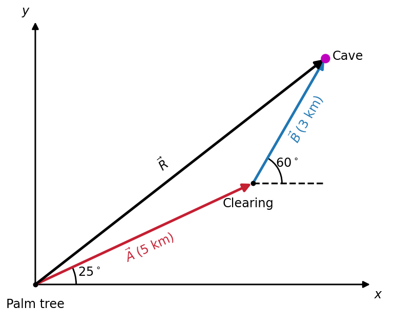
Fig. 2.12 Step 1: Represent the route as vector addition. Jim first travels along \(\vec{A}\) from the palm tree to the clearing and then along \(\vec{B}\) from the clearing to the cave. The resultant \(\vec{R}=\vec{A}+\vec{B}\) gives the direct displacement from the palm tree to the treasure.#
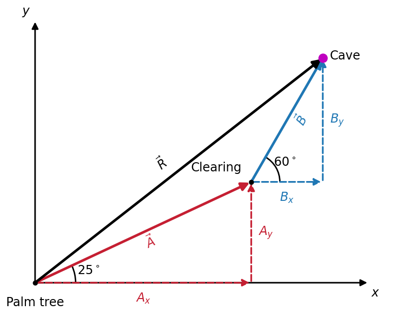
Fig. 2.13 Step 2: Resolve each displacement into components. The red dashed vectors show \(A_x\) and \(A_y\), while the blue dashed vectors show \(B_x\) and \(B_y\). Each two-dimensional displacement is therefore represented by a pair of one-dimensional components.#
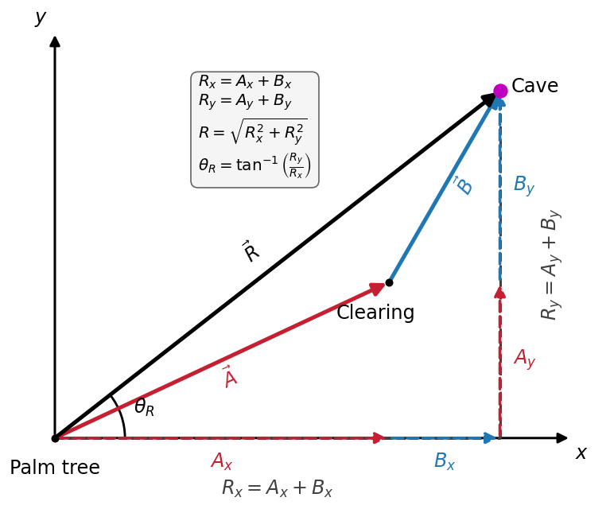
Fig. 2.14 Step 3: Add components along the same axis. The horizontal components combine to give \(R_x=A_x+B_x\), while the vertical components combine to give \(R_y=A_y+B_y\). The resultant \(\vec{R}\) is then reconstructed from these two perpendicular components.#
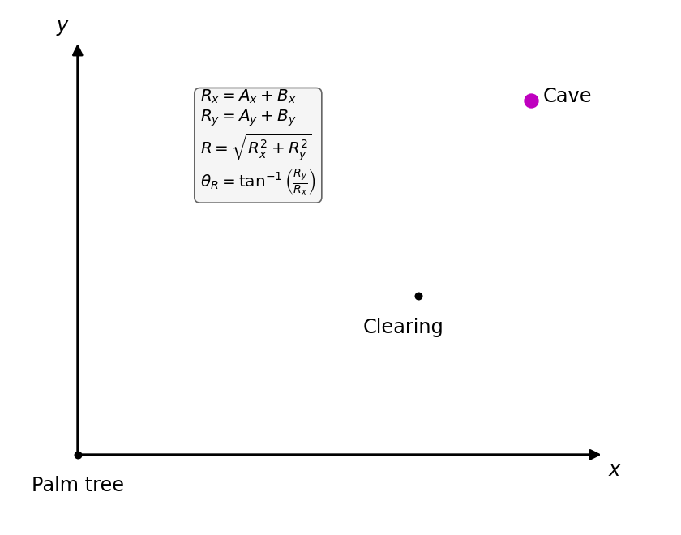
Fig. 2.15 Putting the steps together. The animation follows the analytical method from the original route vectors through component decomposition and finally to the resultant displacement \(\vec{R}\).#
Show code cell content
import numpy as np
import matplotlib.pyplot as plt
from matplotlib.patches import FancyArrowPatch, Arc
from myst_nb import glue
# ------------------------------------------------------------
# Problem geometry
# ------------------------------------------------------------
A = 5 #(in km)
B = 3 #(in km)
theta_A_deg = 25
theta_B_deg = 60
theta_A = np.radians(theta_A_deg)
theta_B = np.radians(theta_B_deg)
Ax = A*np.cos(theta_A)
Ay = A*np.sin(theta_A)
Bx = B*np.cos(theta_B)
By = B*np.sin(theta_B)
Rx = Ax + Bx
Ry = Ay + By
R = np.sqrt(Rx**2 + Ry**2)
theta_R = np.arctan2(Ry,Rx)
theta_R_deg = np.degrees(theta_R)
# Important locations
O = (0,0) # Palm tree
P = (Ax,Ay) # Clearing
Q = (Rx,Ry) # Cave
# ------------------------------------------------------------
# Style
# ------------------------------------------------------------
color_A = '#c51f32'
color_B = 'tab:blue'
color_R = 'k'
axis_color = 'k'
lw_main = 3
lw_axis = 1.8
arrow_scale = 20
fs = 'x-large'
# ------------------------------------------------------------
# Helper functions
# ------------------------------------------------------------
def draw_vector(ax, start, end, color='k', lw=3, linestyle='-', zorder=3):
arrow = FancyArrowPatch(start, end, arrowstyle='-|>', mutation_scale=arrow_scale, linewidth=lw, linestyle=linestyle, color=color, zorder=zorder)
ax.add_patch(arrow)
return arrow
def add_angle_arc(ax, center, radius, theta1_deg, theta2_deg, label, fs='x-large'):
arc = Arc(center, 2*radius, 2*radius, angle=0, theta1=theta1_deg, theta2=theta2_deg, linewidth=1.7, color='k')
ax.add_patch(arc)
theta_mid = np.radians((theta1_deg+theta2_deg)/2)
x = center[0] + 1.35*radius*np.cos(theta_mid)
y = center[1] + 1.35*radius*np.sin(theta_mid)
ax.text(x, y, label, fontsize=fs, ha='center', va='center')
# ------------------------------------------------------------
# Figure
# ------------------------------------------------------------
fig, ax = plt.subplots(figsize=(7,5.5), dpi=120)
# Coordinate axes
x_axis = FancyArrowPatch((0,0), (7.0,0), arrowstyle='-|>', mutation_scale=16, linewidth=lw_axis, color=axis_color, zorder=1)
y_axis = FancyArrowPatch((0,0), (0,5.5), arrowstyle='-|>', mutation_scale=16, linewidth=lw_axis, color=axis_color, zorder=1)
ax.add_patch(x_axis)
ax.add_patch(y_axis)
ax.text(7.05, -0.08, r'$x$', fontsize=fs, ha='left', va='top')
ax.text(-0.10, 5.55, r'$y$', fontsize=fs, ha='right', va='bottom')
# ------------------------------------------------------------
# Route vectors
# ------------------------------------------------------------
draw_vector(ax, O, P, color=color_A, lw=lw_main)
draw_vector(ax, P, Q, color=color_B, lw=lw_main)
draw_vector(ax, O, Q, color=color_R, lw=lw_main)
ax.plot([P[0],Q[0]],[P[1],P[1]],'k--',lw=2)
# ------------------------------------------------------------
# Angle markers
# ------------------------------------------------------------
add_angle_arc(ax, O, 0.85, 0, theta_A_deg, r'$25^\circ$', fs=fs)
add_angle_arc(ax, P, 0.60, 0, theta_B_deg, r'$60^\circ$', fs=fs)
# ------------------------------------------------------------
# Vector labels
# ------------------------------------------------------------
A_mid_x = Ax/2
A_mid_y = Ay/2
B_mid_x = Ax + Bx/2
B_mid_y = Ay + By/2
R_mid_x = Rx/2
R_mid_y = Ry/2
ax.text(A_mid_x+0.1, A_mid_y-0.25, r'$\vec{A}\;(5\ {\rm km})$', color=color_A, fontsize=fs, rotation=theta_A_deg, ha='center', va='center')
ax.text(B_mid_x+0.35, B_mid_y+0.05, r'$\vec{B}\;(3\ {\rm km})$', color=color_B, fontsize=fs, rotation=theta_B_deg, ha='center', va='center')
ax.text(R_mid_x-0.35, R_mid_y+0.15, r'$\vec{R}$', color=color_R, fontsize=fs, rotation=theta_R_deg, ha='center', va='center')
# ------------------------------------------------------------
# Location labels
# ------------------------------------------------------------
ax.plot(O[0], O[1], 'ko', ms=5, zorder=5)
ax.plot(P[0], P[1], 'ko', ms=5, zorder=5)
ax.plot(Q[0], Q[1], 'mo', ms=10, zorder=5)
ax.text(O[0], O[1]-0.28, 'Palm tree', fontsize=fs, ha='center', va='top')
ax.text(P[0]-0.10, P[1]-0.55, 'Clearing', fontsize=fs, ha='center', va='bottom')
ax.text(Q[0]+0.15, Q[1]+0.05, 'Cave', fontsize=fs, ha='left', va='center')
# ------------------------------------------------------------
# Figure formatting
# ------------------------------------------------------------
ax.set_xlim(-0.4,7.4)
ax.set_ylim(-0.8,5.8)
ax.set_xticks([])
ax.set_yticks([])
ax.set_aspect('equal')
for spine in ax.spines.values():
spine.set_visible(False)
plt.tight_layout()
glue('jim_treasure_vectors', fig, display=False)
plt.close(fig)
2.3.4. Check Your Understanding: Resolve a Displacement#
Check Your Understanding: Resolve a Displacement
The Problem
A displacement has magnitude \(12\ {\rm m}\) and points \(35^\circ\) north of east. Find its eastward and northward components.
Show worked solution
The Model
The displacement points \(35^\circ\) north of east, so its horizontal and vertical parts can be represented by perpendicular components along east and north. Taking the \(x\)-axis to point east and the \(y\)-axis to point north makes the stated angle \(\theta=35^\circ\) an angle measured from \(+x\) toward \(+y\). The known magnitude is \(A=12\ {\rm m}\), and the unknowns are the component magnitudes \(A_x\) and \(A_y\).
The Math
The vector and its two perpendicular components form a right triangle. Because the angle is measured from the \(x\)-axis, the horizontal component is adjacent to the angle and the vertical component is opposite it. The component relationships are therefore
Applying these relationships to the given magnitude and direction gives
The Conclusion
The displacement has an eastward component of about \(9.8\ {\rm m}\) and a northward component of about \(6.9\ {\rm m}\). Both components are positive because the vector points north of east in the first quadrant.
2.4. Projectile Motion#
Projectile motion describes the trajectory (i.e., motion) of an object thrown (or launched) into the air, subject to only the acceleration due to gravity. The object is called a projectile and the path of motion is the trajectory. Here, we consider the motion in which air resistance is negligible.
The most important fact to remember is that motions along perpendicular axes are independent and can be analyzed separately. Therefore, the key to solving this type of problem is to break it into two motions: (1) along the horizontal, and (2) along the vertical. By dividing the motions in these directions, the acceleration due to gravity acts in 1D (vertical), while there will be no acceleration (\(a_x = 0\)) along the horizontal axis. By convention, we refer to the horizontal as the \(x\)-axis and the vertical as the \(y\)-axis.
The total displacement \(\vec{s}\) has components \(\vec{x}\) and \(\vec{y}\) that represent the motion along each of the axes. The magnitudes of each of these vectors are \(s\), \(x(=s_x)\), and \(y(=s_y)\), respectively.
The projectile also has a velocity \(\vec{v}\) and acceleration \(\vec{a}\), which can be decomposed into components as \(v_x\), \(v_y\), and \(a_y\) (recall that \(a_x = 0\)). These problems are usually given so that the components of the initial velocity are known so that we have \(v_{0x}\) and \(v_{0y}\) to denote these initial magnitudes. If we assume the positive vertical is up, then \(a_y = -g = -9.81\ {\rm m/s^2}\) which represents the downward acceleration due to gravity.
Kinematic equations for projectile motion
Projectile motion can be analyzed as two independent motions that occur over the same time interval. We choose \(+x\) to be horizontal and \(+y\) to be upward.
Before using the kinematic equations, resolve the initial velocity into components:
For an ideal projectile with negligible air resistance, the acceleration components are \(a_x=0\) and \(a_y=-g\).
Applying these conditions to the constant-acceleration equations greatly simplifies the equations available along each axis.
Horizontal motion (\(x\)) |
Vertical motion (\(y\)) |
|
|---|---|---|
Acceleration |
\(a_x=0\) |
\(a_y=-g\) |
Velocity |
\(v_x=v_{0x}\) |
\(v_y=v_{0y}-gt\) |
Position |
\(x=x_0+v_{0x}t\) |
\(y=y_0+v_{0y}t-\dfrac{1}{2}gt^2\) |
Without time |
— |
\(v_y^2=v_{0y}^2-2g(y-y_0)\) |
Using average velocity |
— |
\(y-y_0=\dfrac{v_{0y}+v_y}{2}t\) |
The horizontal motion is therefore constant-velocity motion, while the vertical motion is constant-acceleration motion. The two motions are connected by the common variable \(t\): the time elapsed horizontally is always the same as the time elapsed vertically.
2.4.1. Applying the Equations to Projectile Motion#
Once the motion is separated into horizontal and vertical components, projectile motion becomes two one-dimensional kinematics problems that share the same time \(t\).
If a projectile is launched with initial speed \(v_0\) at an angle \(\theta_0\) above the horizontal, first resolve the initial velocity into components:
The horizontal motion is especially simple. Because \(a_x=0\), the horizontal velocity never changes, \(v_x=v_{0x}.\) The horizontal position therefore increases uniformly according to
Vertically, gravity produces a constant downward acceleration, \(a_y=-g\). The vertical velocity and position are therefore
Notice what happens during the flight. As the projectile rises, \(v_y\) decreases until it reaches zero at the highest point. The projectile is not at rest there because \(v_x\) is still unchanged. After the highest point, \(v_y\) becomes negative and increases in magnitude as the projectile falls.
The horizontal and vertical motions evolve independently, but they describe the same projectile and therefore share the same elapsed time. The separate horizontal and vertical results can then be recombined to describe the full two-dimensional motion. Relative to the launch point, the displacement components are
Using \(\hat{x}\) and \(\hat{y}\) to indicate the directions of the \(x\)- and \(y\)-coordinate axes, the total displacement is
Its magnitude and direction are
Similarly, the instantaneous velocity is reconstructed from its horizontal and vertical components:
The important idea is therefore not that projectile motion requires a new set of kinematic equations. Instead, the familiar one-dimensional equations are applied separately along two perpendicular axes and the components are recombined when the total displacement or velocity is needed.
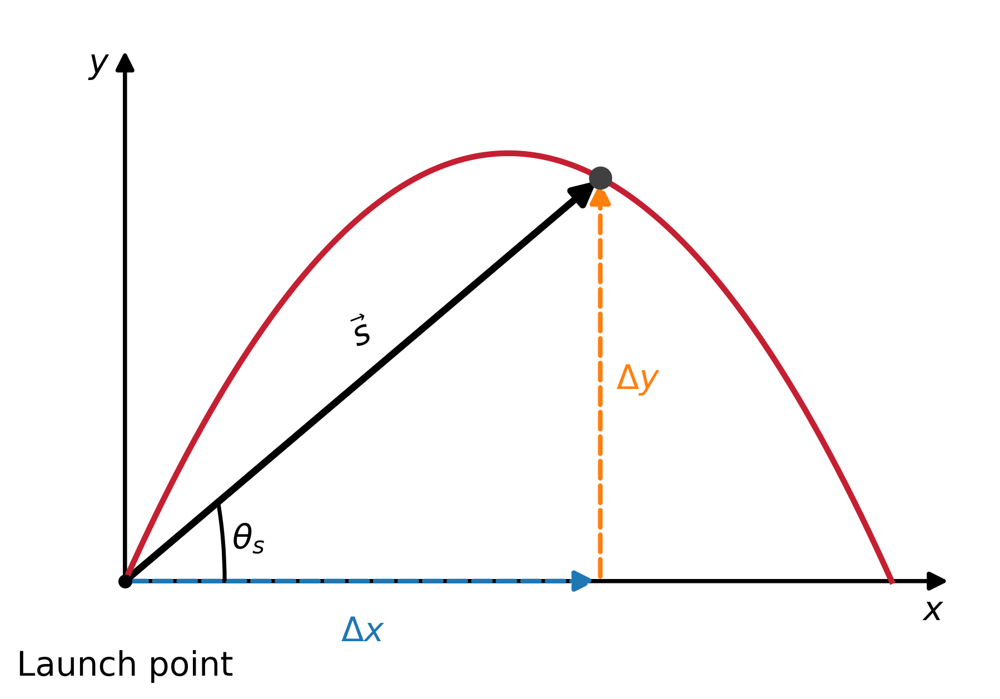
Fig. 2.16 Position along a projectile’s trajectory. At any instant, the projectile’s displacement from its launch point can be separated into the perpendicular components \(\Delta x\) and \(\Delta y\). Recombining these components gives the total displacement \(\vec{s}\). Although the projectile follows a curved parabolic path, \(\vec{s}\) always points directly from the launch point to the projectile’s current position.#
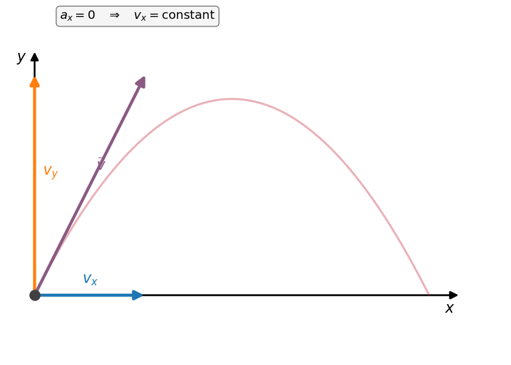
Fig. 2.17 Velocity components during projectile motion. The horizontal component \(v_x\) remains constant because \(a_x=0\), while gravity continuously changes the vertical component \(v_y\). At the highest point, \(v_y=0\) but \(v_x\) remains nonzero. At every point along the trajectory, the components recombine to give the instantaneous velocity \(\vec{v}\).#
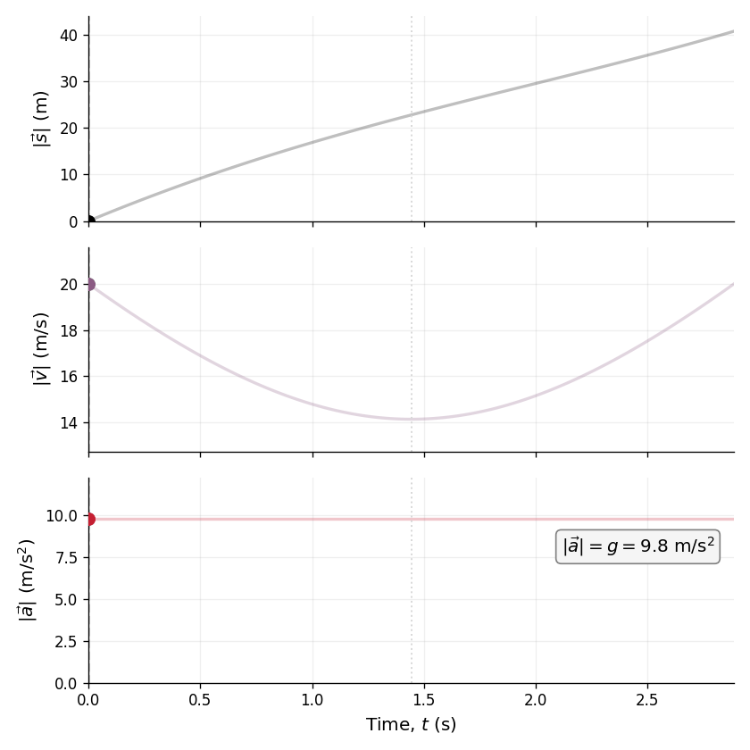
Fig. 2.18 How the magnitudes change during projectile motion. The displacement from the launch point grows as the projectile moves along its trajectory. The speed \(|\vec{v}|\) decreases as the projectile rises, reaches a minimum at the highest point where \(v_y=0\), and then increases as the projectile falls. In contrast, the acceleration magnitude remains constant at \(|\vec{a}|=g\) throughout the entire motion.#
2.4.2. Finding the Maximum Height#
The maximum height \(h\) measures the \(y_{\rm max}\) relative to the initial \(y_0\), or \(h = y_{\rm max}-y_0\). Since the acceleration is constant (\(|\vec{a}| = |a_y| = g\)), we can use the kinematic equation to find \(h\) as the point where \(v_y=0\). We use the final velocity squared equation,
Applying our conditions for the highest point, we have
This equation defines the maximum height of a projectile and depends only on the vertical component of the initial velocity.
Defining a Coordinate System
Choosing a coordinate system when analyzing projectile motion is important, where one part of defining the coordinate system is setting the origin for the \(x\) and \(y\) positions. Often it is convenient to choose the initial position of the object such that \(x_0 = 0\) and \(y_0 = 0\).
It is also important to define the positive and negative orientation of the \(x\) and \(y\) directions. Typically, we define the positive vertical direction as upwards, and positive horizontal direction in the direction of the object’s motion. Then the vertical acceleration is \(a_y = -g\).
However, it is occasionally useful to define the coordinates so that positive \(y\) direction is downward. For example, if you are analyzing the motion of a ball thrown downwards from the top of a cliff, it can make sense to define the positive vertical direction downwards since the motion of the ball is solely in the downwards direction. Then the vertical acceleration is \(a_y = +g\).
2.4.3. Example Problem: Fireworks at the Highest Point#
Example Problem: Fireworks at the Highest Point
The Problem
A fireworks shell is launched at \(70\ {\rm m/s}\) at an angle of \(75^\circ\) above the horizontal. Its fuse is timed so that the shell explodes at the highest point of its trajectory. Find (a) the height of the explosion above the launch point, (b) the time from launch to the explosion, and (c) the horizontal displacement when the shell explodes. Neglect air resistance.
Show worked solution
The Model
The shell is treated as an ideal projectile, so gravity is the only acceleration after launch. The launch point serves as the origin, with the \(x\)-axis horizontal in the direction of launch and the \(y\)-axis vertical with \(+y\) upward. This gives \(a_x=0\) and \(a_y=-g\). At the highest point the shell is still moving horizontally, but its vertical velocity has decreased to \(v_y=0\). The given launch speed and angle determine the initial horizontal and vertical velocity components needed to analyze the two motions separately.
The Math
Because the launch velocity is given by a magnitude and an angle, it is first resolved into horizontal and vertical components:
For part (a), the highest point is most directly connected to the vertical kinematic equation that does not contain time:
At the apex, \(v_y=0\), and the launch point is \(y_0=0\). Solving the equation for the height gives
For part (b), the time to reach the apex follows from how gravity changes the vertical velocity:
Using \(v_y=0\) at the highest point gives
For part (c), the horizontal motion has zero acceleration, so the horizontal velocity remains \(v_{0x}\) throughout this same time interval. The horizontal displacement is therefore
The Conclusion
The shell explodes about \(233\ {\rm m}\) above the launch point after \(6.89\ {\rm s}\) and about \(125\ {\rm m}\) horizontally from where it was launched. The result is consistent with the model: the vertical velocity has fallen to zero at the apex while the horizontal velocity remains unchanged.
Adapted from OpenStax College Physics 2e, Example 3.4.
2.4.4. Finding the Time-of-Flight#
The length of time it takes a projectile to complete its trajectory is called the time-of-flight \(t\). Since the motions are independent, we can use the \(y\) position quadratic equation, or
where \(y\) is the landing height. With some basic algebra, we can rearrange this equation into the standard form of the quadratic equation that equals zero. As a result, we can use the general solution of the quadratic equation to get
The two solutions represent the possible times when the projectile is at the specified vertical position \(y\). For the total time-of-flight, we choose the later physically meaningful time. For example, if the landing height is the same as the initial \(y_0\), or \(y=y_0\), then we would find
There are two solutions: \(t = 0\) and \(t = \frac{2v_{0y}}{g}\), where the non-zero solution is physically meaningful.
2.4.5. Example Problem: Rock Ejected from a Volcano#
Example Problem: Rock Ejected from a Volcano
The Problem
A rock is ejected from a volcano at \(25\ {\rm m/s}\) at an angle of \(35^\circ\) above the horizontal. It later strikes the side of the volcano at a point \(20\ {\rm m}\) below its launch height. Find (a) the time of flight and (b) the magnitude and direction of the rock’s velocity at impact. Neglect air resistance.
Fig. 2.19 The projectile begins above its impact point, so the final vertical displacement is negative when \(+y\) is upward. Source: OpenStax College Physics 2e, Figure 3.37.#
Show worked solution
The Model
The rock is treated as an ideal projectile whose horizontal and vertical motions share the same elapsed time. The launch point serves as the origin, with the \(x\)-axis horizontal in the launch direction and the \(y\)-axis vertical with \(+y\) upward. Gravity therefore gives \(a_x=0\) and \(a_y=-g\), while the impact point lies \(20\ {\rm m}\) below the launch point at \(y=-20\ {\rm m}\). The vertical motion determines the flight time, and that same time is then used to determine the vertical impact velocity before the horizontal and vertical velocity components are recombined.
The Math
The launch speed and angle are first resolved into components so that the horizontal and vertical motions can be treated separately:
For part (a), the flight time is determined from the vertical position equation because the final vertical position is known:
With \(y_0=0\) and \(y=-20\ {\rm m}\), the equation becomes
The resulting quadratic has one negative-time root, which corresponds to an extrapolated time before launch, and one physically relevant positive root:
For part (b), the horizontal velocity remains constant because \(a_x=0\), while gravity changes the vertical velocity during the \(3.96\ {\rm s}\) flight. The two impact components are
The impact speed follows from recombining these perpendicular components:
The negative vertical component shows that the rock is moving downward at impact. Its direction below the horizontal is
The Conclusion
The rock remains in the air for about \(3.96\ {\rm s}\) and strikes the volcano at \(31.9\ {\rm m/s}\), directed \(50.1^\circ\) below the horizontal. The downward direction is consistent with the negative vertical velocity and the impact point being below the launch height.
Adapted from OpenStax College Physics 2e, Example 3.5.
2.4.6. Check Your Understanding: At the Highest Point#
Check Your Understanding: At the Highest Point
The Problem
At the highest point of an ideal projectile’s trajectory, which of the following are zero: \(v_x\), \(v_y\), the speed \(v\), and the acceleration \(\vec{a}\)? Explain.
Show worked solution
The Conclusion
Only the vertical velocity component is zero: \(v_y=0\). The horizontal component \(v_x\) remains constant and nonzero, so the projectile still has a nonzero speed. The acceleration is also nonzero and continues to point downward with magnitude \(g\). The highest point is therefore a turning point for the vertical motion, not a point where the projectile stops.
2.4.7. Finding the Range of a Projectile#
On level ground, we define the maximum distance \(R\) traveled by a projectile as the range.
How does the initial velocity of a projectile affect its range?
Naively, we can guess that the greater the initial speed \(v_0\), the greater the range. However, the initial angle \(\theta_0\) also has an effect on the range. For a fixed initial speed \(v_0\), the maximum range is obtained with \(\theta_0 = 45^\circ\) (assuming negligible air resistance). When air resistance is included, we must take the air density and cross-sectional area of the projectile into account.
Again we take advantage of the independent motions, but this time we use
The \(t\) in the above equation represents the time-of-flight (see Eqn. (2.15)). In many cases, the projectile returns to the same height \(y=y_0\), where we can use the simplified equation to get
where \(v_0\) is the initial speed and \(\theta_0\) is the initial angle relative to the horizontal.
2.4.8. Limitations and Extreme Ranges#
We assume that the range \(R\) is small compared with the circumference of the Earth. For ranges that become a significant fraction of Earth’s radius, the Earth curves away below the projectile and the acceleration due to gravity changes direction along the path. The range is larger than predicted by the range equation above because the projectile has farther to fall than it would on level ground.
Suppose we increase the initial speed \(v_0\) to a very large number (\({\sim}8\ {\rm km/s}\)), then the projectile would go into orbit (i.e., never falling to the ground if we neglect air resistance). This possibility was recognized by Newton in the 17th century, which was long before the first artificial satellites in 1957.
Interactive Simulation: Projectile Motion
Use this PhET simulation to explore more about projectile motion by firing various objects.
2.5. Addition of Velocities#
2.5.1. Relative Velocity#
If a person rows a boat across a rapidly flowing river and tries to head directly to the other shore, the boat instead moves diagonally relative to the shore. The boat does not move in the direction in which it is pointed. The river carries the boat downstream, or the boat acquires a perpendicular velocity from the stream. If a small airplane flies overhead with a strong crosswind, it can also move in a different direction than the one in which it is pointed. The plane is moving relative to the air, but the air current relative to the ground carries it sideways.
In each of these situations, an object has a relative velocity that depends on the reference frame. There is a velocity relative to the medium (e.g., river), where the medium has a velocity relative to an observer on solid ground. The velocity that the observer measures (i.e., relative to the observer) is the sum of these velocity vectors.
How do we add velocities?
Velocity is a vector that has both magnitude and direction. Therefore, we apply the rules of vector addition just as we would for any other vectors. In 1D motion, vector addition was simple, where it was the simple arithmetic of the magnitudes and the direction was determined by a sign (e.g., \(+5\ {\rm m\ east} + 2\ {\rm m\ west} = 3\ {\rm m east}\)). For 1D addition with velocity, we follow the same procedure.
For example, a soccer player runs with a speed of \(5\ {\rm m/s}\) towards the goal and drives the ball in the same direction with a velocity of \(30\ {\rm m/s}\) relative to her body. Then, the ball’s velocity is \(35\ {\rm m/s}\) relative to the stationary (profusely sweating) goalkeeper standing in front of the goal.
In 2D motion, either graphical or analytical techniques can be used to add velocities, where we concentrate on analytical techniques here. The velocity vectors can be decomposed into components along the \(x\)- and \(y\)-axes, where the components are appropriately called \(v_x\) and \(v_y\). Similar to our construction of the resultant vector for displacement, a velocity vector can be constructed from either its scalar magnitude \(v\) and direction \(\theta\) or these components along the coordinate axes. Thus, we have the following relations:
As before, the first two equations are used to find the components of the velocity (\(v_x,\ v_y)\) when \(v\) and \(\theta\) are known. The last two equations are used to find the magnitude \(v\) and direction \(\theta\) when the velocity components are known.
2.5.2. Example Problem: Boat Crossing a River#
Example Problem: Boat Crossing a River
The Problem
A boat moves at \(0.75\ {\rm m/s}\) straight across a river relative to the water while the river current flows at \(1.2\ {\rm m/s}\) downstream. Find the magnitude and direction of the boat’s velocity relative to an observer on shore.
Fig. 2.20 The velocity of the boat relative to the shore is the vector sum of the boat’s velocity relative to the water and the river’s velocity relative to the shore. Source: OpenStax College Physics 2e, Figure 3.43.#
Show worked solution
The Model
The boat’s motion relative to the shore results from two perpendicular velocities: the boat moves straight across the river relative to the water while the current carries both the water and the boat downstream. Taking the downstream direction as \(+x\) and the straight-across direction as \(+y\) aligns each known velocity with one coordinate axis. The current then contributes \(v_x=1.2\ {\rm m/s}\), the boat contributes \(v_y=0.75\ {\rm m/s}\), and their vector sum gives the boat’s velocity relative to the shore.
The Math
Because the two known velocity components are perpendicular, the magnitude of the shore-relative velocity follows from the Pythagorean theorem:
The direction is measured from the downstream \(+x\)-axis toward the across-river component. The tangent of this angle is the ratio of the perpendicular component to the downstream component, so
The Conclusion
The boat moves at about \(1.42\ {\rm m/s}\) relative to the shore in a direction \(32.0^\circ\) across the river from the downstream direction. The current is faster than the boat’s across-river speed, so the resultant points more downstream than across.
Adapted from OpenStax College Physics 2e, Example 3.6.
2.5.3. Example Problem: Airplane Drifting in the Wind#
Example Problem: Airplane Drifting in the Wind
The Problem
An airplane moves at \(45\ {\rm m/s}\) due north relative to the surrounding air. Its measured velocity relative to the ground is \(38\ {\rm m/s}\) at \(20^\circ\) west of north. Find the speed and direction of the wind relative to the ground.
Fig. 2.21 The plane’s velocity relative to the ground is the sum of its velocity relative to the air and the wind velocity. Source: OpenStax College Physics 2e, Figure 3.44.#
Show worked solution
The Model
The airplane’s velocity relative to the ground is produced by adding its velocity relative to the air to the wind velocity. Using east as \(+x\) and north as \(+y\) makes the airplane’s air-relative velocity entirely vertical, with \(v_{{\rm p}x}=0\) and \(v_{{\rm p}y}=45\ {\rm m/s}\). The known ground velocity points \(20^\circ\) west of north, and the unknown wind vector must supply the difference between that ground velocity and the airplane’s velocity through the air.
The Math
The known ground velocity is first resolved into east-west and north-south components. Because it points \(20^\circ\) west of north, its \(x\)-component is negative while its \(y\)-component is positive:
The relative-velocity relation \(\vec{v}_{\rm ground}=\vec{v}_{\rm plane,air}+\vec{v}_{\rm wind}\) applies independently along each axis. Subtracting the airplane’s air-relative components from the ground-velocity components gives
These two negative components show that the wind points toward the southwest. Its speed is
The direction south of west follows from the ratio of the southward and westward component magnitudes:
The Conclusion
The wind is approximately \(16.0\ {\rm m/s}\) at \(35.6^\circ\) south of west. The westward component explains the airplane’s drift, while the southward component acts as a headwind and reduces its northward ground speed.
Adapted from OpenStax College Physics 2e, Example 3.7.
2.5.4. Relative Velocities and Classical Relativity#
When adding velocities, we must be careful to specify that the velocity is relative to some reference frame. For example, the velocity of an airplane relative to an air mass is different from its velocity relative to the ground. Relative velocities are described by a principle of relativity, which is defined as the study of how different observers moving relative to each other measure the same phenomenon.
Albert Einstein revolutionized our view of nature with his special theory of relativity, however this is built upon aspects of classical relativity developed by Galileo and Newton. Classical relativity is limited to situations where the speeds of the objects are much less (\(\lesssim 1\%\) speed of light), where most things we encounter in daily life move at these slower speeds.
Consider a pirate ship moving at a constant velocity relative to the shore. A sailor high on the mast accidentally drops a spyglass. We can describe the motion from two different points of view: the sailor’s reference frame, which moves with the ship, and the shore observer’s reference frame, which is stationary relative to the shore.
The coordinates and velocities measured in each reference frame are different, even though both observers are watching the same spyglass. For simplicity, suppose the spyglass is released from rest relative to the sailor and air resistance is negligible.
Quantity |
Sailor on the ship |
Observer on the shore |
|---|---|---|
Horizontal position |
\(x_{\rm spyglass}=x_0\) |
\(x_{\rm spyglass}=x_0+v_{\rm ship}t\) |
Horizontal velocity |
\(v_{x,\rm spyglass}=0\) |
\(v_{x,\rm spyglass}=v_{\rm ship}\) |
Vertical position |
\(y_{\rm spyglass}=y_0-\dfrac{1}{2}gt^2\) |
\(y_{\rm spyglass}=y_0-\dfrac{1}{2}gt^2\) |
Vertical velocity |
\(v_{y,\rm spyglass}=-gt\) |
\(v_{y,\rm spyglass}=-gt\) |
Observed path |
Straight down |
Curved |
The vertical motion is the same for both observers. Gravity produces the same downward acceleration, so both measure the same vertical position and vertical velocity at a given time.
The horizontal motion is different. To the sailor, the mast, deck, and spyglass all move together with the ship. The spyglass therefore has no horizontal velocity relative to the sailor and appears to fall straight down the mast.
To the observer on shore, however, the ship continues moving while the spyglass falls. At the instant it is released, the spyglass already has the same horizontal velocity as the ship. With no horizontal acceleration, it keeps that velocity throughout the fall. The shore observer therefore sees the spyglass follow a curved path.
This difference can be expressed using velocity addition. The velocity of the spyglass measured from shore is the sum of its velocity relative to the ship and the velocity of the ship relative to shore:
In the horizontal direction, the spyglass has no velocity relative to the sailor, \(v_{x,\rm spyglass,ship}=0,\) so the shore observer measures
In the vertical direction, the ship has no vertical velocity relative to shore, so both observers measure \(v_{y,\rm spyglass}=-gt.\)
The two observers therefore describe different trajectories, but they agree on the physical event that ends the motion: the spyglass lands at the base of the mast. It does not fall behind the ship because the spyglass retains the ship’s horizontal velocity after it is released.
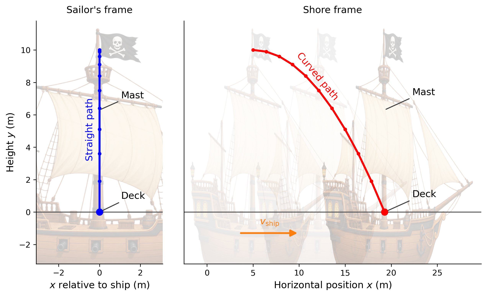
Fig. 2.22 The same motion viewed from two reference frames. In the sailor’s frame, the ship is stationary and the spyglass falls straight down beside the mast. In the shore observer’s frame, the ship and spyglass move horizontally together while gravity accelerates the spyglass downward, producing a curved trajectory. In both reference frames, the spyglass lands at the base of the mast.#
2.5.5. Example Problem: Dropped Coin in a Moving Airplane#
Example Problem: Dropped Coin in a Moving Airplane
The Problem
An airline passenger drops a coin while the airplane moves horizontally at \(260\ {\rm m/s}\). The coin falls \(1.5\ {\rm m}\) to the floor. Find the coin’s velocity just before impact (a) relative to the airplane and (b) relative to Earth. Neglect air resistance.
Fig. 2.23 The coin follows different paths in the airplane and Earth reference frames even though both observers describe the same impact event. Source: OpenStax College Physics 2e, Figure 3.46.#
Show worked solution
The Model
The same falling coin is described from two different reference frames. Relative to the airplane, the coin is released with no horizontal or vertical velocity and simply falls toward the floor. Relative to Earth, the coin begins with the airplane’s horizontal velocity, \(v_x=260\ {\rm m/s}\), while its initial vertical velocity is still zero. In both frames gravity provides the same vertical acceleration, \(a_y=-g\), and the coin undergoes the same vertical displacement, \(y-y_0=-1.5\ {\rm m}\).
The Math
The vertical part of the motion is identical in both reference frames, so the impact vertical velocity can be found once and then used in each description. The kinematic equation that relates vertical velocity directly to vertical displacement is
With \(v_{0y}=0\), \(a_y=-g\), and \(y-y_0=-1.5\ {\rm m}\), the downward impact velocity is
The negative sign is required because \(+y\) points upward while the coin is moving downward. Relative to the airplane there is no horizontal component, so the impact velocity is \(5.42\ {\rm m/s}\) straight downward.
The Earth observer measures that same vertical component together with the unchanged horizontal component \(v_x=260\ {\rm m/s}\). Recombining the perpendicular components gives the Earth-relative speed:
The direction lies slightly below the horizontal, with angle
The Conclusion
Relative to the airplane, the coin strikes the floor at \(5.42\ {\rm m/s}\) straight downward. Relative to Earth, it has horizontal and vertical components of \(260\ {\rm m/s}\) and \(-5.42\ {\rm m/s}\), corresponding to a speed of about \(260\ {\rm m/s}\) at \(1.19^\circ\) below the horizontal. The two velocities differ because the observers use different reference frames.
Adapted from OpenStax College Physics 2e, Example 3.8.
2.5.6. Check Your Understanding: Walking Inside a Moving Vehicle#
Check Your Understanding: Walking Inside a Moving Vehicle
The Problem
A passenger walks toward the front of a train at \(2\ {\rm m/s}\) relative to the train while the train moves forward at \(20\ {\rm m/s}\) relative to the ground. What velocity does a stationary observer beside the track measure for the passenger?
Show worked solution
The Model
This situation is one-dimensional because the passenger’s walking velocity and the train’s velocity both lie along the track. The passenger moves forward at \(2\ {\rm m/s}\) relative to the train, while the train moves forward at \(20\ {\rm m/s}\) relative to the ground. The ground-relative velocity of the passenger is therefore obtained by adding two collinear relative velocities that point in the same direction.
The Math
Since both velocities point forward along the same axis, the vector addition reduces to ordinary addition of their positive components. The passenger’s velocity relative to the ground is
The Conclusion
The observer beside the track measures the passenger moving forward at \(22\ {\rm m/s}\). The passenger and the observer assign different velocities to the same person because they use different reference frames.
Show code cell content
import numpy as np
import matplotlib.pyplot as plt
from matplotlib.patches import FancyArrowPatch
from PIL import Image
# ------------------------------------------------------------
# Parameters
# ------------------------------------------------------------
g = 9.81 # acceleration due to gravity (m/s^2)
y_0 = 10 # release height above the deck (m)
x_0 = 5 # initial mast position in the shore frame (m)
v_ship = 10 # ship speed relative to shore (m/s)
ms = 7
lw = 2.5
fs = 'large'
t_flight = np.sqrt(2*y_0/g)
t = np.linspace(0,t_flight,11)
# ------------------------------------------------------------
# Label positions
# ------------------------------------------------------------
# Sailor panel
straight_label_x = -0.25
straight_label_y = 5.1
mast1_text_x, mast1_text_y = 1.05, 7.2
deck1_text_x, deck1_text_y = 1.05, 1.0
# Shore panel
curved_label_x = 12
curved_label_y = 6.8
curved_label_rotation = -50
mast2_dx = 3.0
mast2_text_y = 7.4
deck2_dx = 3.0
deck2_text_y = 1.1
# ------------------------------------------------------------
# Motion
# ------------------------------------------------------------
# Sailor frame
x_sailor = np.zeros_like(t)
y_sailor = y_0 - 0.5*g*t**2
# Shore frame
x_shore = x_0 + v_ship*t
y_shore = y_0 - 0.5*g*t**2
x_final = x_shore[-1]
# ------------------------------------------------------------
# Pirate ship background
# ------------------------------------------------------------
ship_path = 'pirate_ship.png'
ship = Image.open(ship_path)
# Image extent chosen so the main mast is near x = 0
# and the deck is near y = 0.
ship_left = -8.0
ship_right = 10.0
ship_bottom = -4.2
ship_top = 11.4
# ------------------------------------------------------------
# Figure
# ------------------------------------------------------------
fig = plt.figure(figsize=(10,5.5),dpi=120)
gs = fig.add_gridspec(1,2,width_ratios=[1,2.35],wspace=0.10)
ax1 = fig.add_subplot(gs[0,0])
ax2 = fig.add_subplot(gs[0,1],sharey=ax1)
# ------------------------------------------------------------
# Sailor frame
# ------------------------------------------------------------
ax1.imshow(ship,extent=[ship_left,ship_right,ship_bottom,ship_top],alpha=0.24,aspect='auto',zorder=0)
# Spyglass trajectory
ax1.plot(x_sailor,y_sailor,'b.-',ms=ms,lw=lw,zorder=5)
ax1.plot([0],[0],'bo',ms=ms+1,zorder=6)
# Labels
ax1.annotate('Mast',xy=(0,6.3),xytext=(mast1_text_x,mast1_text_y),fontsize=fs,ha='left',va='center',
arrowprops=dict(arrowstyle='-',lw=1.2,color='0.25'))
ax1.annotate('Deck',xy=(0,0),xytext=(deck1_text_x,deck1_text_y),fontsize=fs,ha='left',va='center',
arrowprops=dict(arrowstyle='-',lw=1.2,color='0.25'))
ax1.text(straight_label_x,straight_label_y,'Straight path',color='b',fontsize=fs,rotation=90,ha='right',va='center')
ax1.set_title("Sailor's frame",fontsize=fs,pad=10)
ax1.set_xlabel(r'$x$ relative to ship (m)',fontsize=fs)
ax1.set_ylabel(r'Height $y$ (m)',fontsize=fs)
ax1.set_xlim(-3.1,3.1)
ax1.set_ylim(-3.2,11.8)
# ------------------------------------------------------------
# Shore frame
# ------------------------------------------------------------
# Initial ship position
ax2.imshow(ship,extent=[ship_left+x_0,ship_right+x_0,ship_bottom,ship_top],alpha=0.10,aspect='auto',zorder=0)
# Intermediate ship position
x_mid = x_0 + 0.5*v_ship*t_flight
ax2.imshow(ship,extent=[ship_left+x_mid,ship_right+x_mid,ship_bottom,ship_top],alpha=0.07,aspect='auto',zorder=0)
# Final ship position
ax2.imshow(ship,extent=[ship_left+x_final,ship_right+x_final,ship_bottom,ship_top],alpha=0.22,aspect='auto',zorder=0)
# Spyglass trajectory
ax2.plot(x_shore,y_shore,'r.-',ms=ms,lw=lw,zorder=5)
ax2.plot([x_final],[0],'ro',ms=ms+1,zorder=6)
# Ship velocity arrow
ship_arrow = FancyArrowPatch((x_0-1.5,-1.3),(x_0+5.0,-1.3),arrowstyle='-|>',mutation_scale=17,
linewidth=2.2,color='tab:orange',zorder=7)
ax2.add_patch(ship_arrow)
ax2.text(x_0+1.8,-0.95,r'$v_{\rm ship}$',color='tab:orange',fontsize=fs,ha='center',va='bottom')
# Mast and deck labels on final ship
ax2.annotate('Mast',xy=(x_final,6.3),xytext=(x_final+mast2_dx,mast2_text_y),fontsize=fs,ha='left',va='center',
arrowprops=dict(arrowstyle='-',lw=1.2,color='0.25'))
ax2.annotate('Deck',xy=(x_final,0),xytext=(x_final+deck2_dx,deck2_text_y),fontsize=fs,ha='left',va='center',
arrowprops=dict(arrowstyle='-',lw=1.2,color='0.25'))
# Curved-path label
ax2.text(curved_label_x,curved_label_y,'Curved path',color='r',fontsize=fs,rotation=curved_label_rotation,
ha='center',va='bottom')
ax2.set_title('Shore frame',fontsize=fs,pad=10)
ax2.set_xlabel(r'Horizontal position $x$ (m)',fontsize=fs)
ax2.set_xlim(x_0-7.5,x_final+10.5)
# ------------------------------------------------------------
# Shared formatting
# ------------------------------------------------------------
for ax in (ax1,ax2):
ax.axhline(0,color='0.35',lw=1.2,zorder=1)
ax.tick_params(labelsize='medium')
ax.spines['top'].set_visible(False)
ax.spines['right'].set_visible(False)
plt.setp(ax2.get_yticklabels(),visible=False)
ax2.tick_params(axis='y',length=0)
plt.savefig('spyglass_reference_frames.png',dpi=300,bbox_inches='tight')
plt.close();
Interactive Simulation: Motion in 2D
Use this PhET simulation to learn more about position, velocity, and acceleration vectors in 2D.
2.6. In-Class Exercises#
2.6.1. Instructions#
You will use the final 20 minutes of class to begin the problems assigned for that class day. First, you must make a serious attempt on each assigned problem independently. After developing your own approach, you may compare ideas and discuss the problems with other students.
Each student must prepare and submit an individual solution. Organize each quantitative solution using the Problem–Model–Math–Conclusion format. Show your reasoning, equations, substitutions with units, and interpretation of the result. A numerical answer without supporting work is not a complete solution.
Open this page in Google Colab so you can easily copy the problems to the template without retyping them.
Export your completed Jupyter notebook as a PDF and submit the PDF to D2L by 11:59 p.m. CT on the day of class. The PDF filename must follow the format LastName_ChXX_SetY.pdf, where XX is the two-digit chapter number and Y is the problem-set number.
Make your own copy before beginning
A read-only Jupyter notebook template is available on D2L. Before entering any work, you must make your own editable copy of the notebook by selecting Save a copy in Drive.
Changes made directly to the read-only template cannot be saved. It does not matter how much work you enter: if you have not made your own copy, your changes will be lost. Confirm that you can rename and save your copy before beginning the problems.
2.6.2. Problems#
Problem 1
You walk \(18\ {\rm m}\) straight west and then \(25\ {\rm m}\) straight north. How far are you from your starting point, and what is the compass direction of the displacement from your starting point to your final position?
Problem 2
Two velocity vectors \(\vec{v}_A\) and \(\vec{v}_B\) combine to give \(\vec{v}_{\rm tot}\) as shown in Figure 2.24. The total velocity has magnitude \(v_{\rm tot}=6.72\ {\rm m/s}\), and the angles shown are \(22.5^\circ\), \(26.5^\circ\), and \(23.0^\circ\). Find the magnitudes of \(\vec{v}_A\) and \(\vec{v}_B\).
Fig. 2.24 The velocity vectors \(\vec{v}_A\) and \(\vec{v}_B\) add head-to-tail to produce the total velocity \(\vec{v}_{\rm tot}=\vec{v}_A+\vec{v}_B\). The labeled angles and total speed can be used to determine the magnitudes of the two component velocities. Source: OpenStax College Physics 2e, Figure 3.52.#
Problem 3
In an attempt to escape his island, Gilligan builds a raft and sets to sea. The wind shifts throughout the day, and he is blown along the following straight-line displacements: \(2.50\ {\rm km}\) at \(45.0^\circ\) north of west; \(4.70\ {\rm km}\) at \(60.0^\circ\) south of east; \(1.30\ {\rm km}\) at \(25.0^\circ\) south of west; \(5.10\ {\rm km}\) straight east; \(1.70\ {\rm km}\) at \(5.00^\circ\) east of north; \(7.20\ {\rm km}\) at \(55.0^\circ\) south of west; and \(2.80\ {\rm km}\) at \(10.0^\circ\) north of east. What is his final position relative to the island?
Problem 4
A ball is kicked with an initial horizontal velocity of \(16\ {\rm m/s}\) and an initial vertical velocity of \(12\ {\rm m/s}\). Find (a) the speed of the ball just before it hits the ground, (b) the total time the ball remains in the air, and (c) the maximum height reached by the ball. Assume the ball lands at the same height from which it was kicked and ignore air resistance.
Problem 5
A ball is thrown horizontally from the top of a \(60.0\ {\rm m}\) building and lands \(100.0\ {\rm m}\) from the base of the building. Ignore air resistance. Find (a) the time the ball is in the air, (b) its initial horizontal velocity, (c) its vertical velocity just before it hits the ground, and (d) its total velocity, including both magnitude and direction, just before it hits the ground.
Problem 6
A seagull flies at \(9.00\ {\rm m/s}\) relative to the air directly into the wind. It takes \(20.0\ {\rm min}\) to travel \(6.00\ {\rm km}\) relative to Earth. Find (a) the velocity of the wind. The bird then turns around and flies with the wind. Find (b) the time required to return \(6.00\ {\rm km}\) and (c) explain how the wind changes the total round-trip time compared with the time required if there were no wind.
2.7. Homework#
2.7.1. Instructions#
Homework assignment
The homework is designed to give you regular practice applying the ideas developed in this chapter. A read-only Jupyter notebook template for the assignment is available on D2L. Before entering any work, you must make your own editable copy of the notebook. Changes made directly to the read-only template cannot be saved, so confirm that you can rename and save your copy before beginning.
There are two types of homework questions:
Conceptual questions: Copy the question into your notebook and answer it under a heading titled The Conclusion. Your response should be a paragraph that directly answers the question and explains the physical reasoning behind your answer. A Model or Math section is not required unless the question genuinely requires a calculation.
Quantitative questions: Copy the problem into your notebook and organize your solution using the Problem–Model–Math–Conclusion format. Identify the physical situation, assumptions, knowns, unknowns, and sign convention in the Model; develop and apply the necessary equations in the Math; and state, interpret, and check your result in the Conclusion. Include units in numerical substitutions.
The worked examples and Check Your Understanding questions on the course webpage provide examples of the reasoning and solution style expected in your homework.
Don’t wait until the night it is due
Homework is much easier to manage when you complete a couple of problems at a time as you work through the chapter. This gives you time to identify concepts that you do not understand and ask questions before the due date. Trying to complete the entire assignment the night it is due usually leaves little time to diagnose mistakes or revisit the course material.
Submission
When your assignment is complete, export the Jupyter notebook as a PDF and submit the PDF to D2L by 11:59 p.m. CT on the due date.
Name your submitted file using the format LastName_ChXX_HW.pdf. Replace LastName with your last name and XX with the two-digit chapter number. For example, homework for Chapter 2 submitted by Jane Smith would be Smith_Ch02_HW.pdf.
Before submitting, open the PDF and make sure that all questions, equations, figures, and solutions are visible and readable.
2.7.2. Conceptual Questions#
Problem 1
Suppose you add two vectors \(\vec{A}\) and \(\vec{B}\). What relative direction between them produces the resultant with the greatest magnitude? What is this maximum magnitude? What relative direction produces the resultant with the smallest magnitude? What is this minimum magnitude?
Problem 2
Consider projectile motion over level ground with negligible air resistance, where the initial angle is neither \(0^\circ\) nor \(90^\circ\). (a) Is the acceleration ever zero? (b) Is the acceleration ever in the same direction as a component of the velocity? (c) Is the acceleration ever opposite in direction to a component of the velocity?
2.7.3. Quantitative Questions#
Problem 3
You first walk \(12.0\ {\rm m}\) in a direction \(20.0^\circ\) west of north and then \(20.0\ {\rm m}\) in a direction \(40.0^\circ\) south of west. How far are you from your starting point, and what is the compass direction of the displacement from your starting point to your final position?
Problem 4
You drive \(7.50\ {\rm km}\) in a straight line at \(15^\circ\) east of north. (a) Find the distances you would have to drive straight east and then straight north to arrive at the same point. (b) Show that you arrive at the same point if the east and north portions of the trip are reversed in order.
Problem 5
An eagle flies horizontally at a speed of \(3.00\ {\rm m/s}\) when the fish in its talons wiggles loose and falls into a lake \(5.00\ {\rm m}\) below. Calculate the velocity of the fish relative to the water just before it hits the water. Ignore air resistance.
Problem 6
A football quarterback is moving straight backward at a speed of \(2.00\ {\rm m/s}\) when he throws a pass to a player \(18.0\ {\rm m}\) straight downfield. The ball is thrown at an angle of \(25.0^\circ\) relative to the ground and is caught at the same height from which it was released. What is the initial velocity of the ball relative to the quarterback?